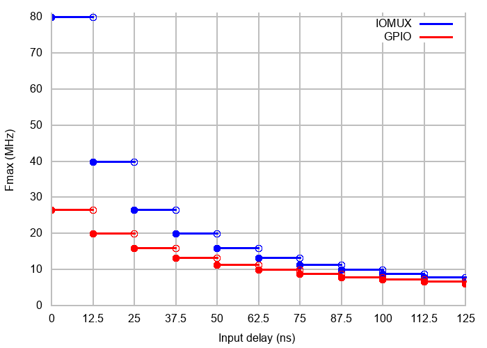

SPI Master Driver
SPI Master driver is a program that controls ESP32's General Purpose SPI (GP-SPI) peripheral(s) when it functions as a master.
Note
SPI1 is not a GP-SPI. SPI Master driver also supports SPI1 but with quite a few limitations, see Notes on Using the SPI Master Driver on SPI1 Bus.
For more hardware information about the GP-SPI peripheral(s), see ESP32 Technical Reference Manual > SPI Controller [PDF].
Terminology
The terms used in relation to the SPI Master driver are given in the table below.
Term |
Definition |
|---|---|
Host |
The SPI controller peripheral inside ESP32 initiates SPI transmissions over the bus and acts as an SPI Master. |
Device |
SPI slave Device. An SPI bus may be connected to one or more Devices. Each Device shares the MOSI, MISO, and SCLK signals but is only active on the bus when the Host asserts the Device's individual CS line. |
Bus |
A signal bus, common to all Devices connected to one Host. In general, a bus includes the following lines: MISO, MOSI, SCLK, one or more CS lines, and, optionally, QUADWP and QUADHD. So Devices are connected to the same lines, with the exception that each Device has its own CS line. Several Devices can also share one CS line if connected in a daisy-chain manner. |
MOSI |
Master Out, Slave In, a.k.a. D. Data transmission from a Host to Device. Also data0 signal in Octal/OPI mode. |
MISO |
Master In, Slave Out, a.k.a. Q. Data transmission from a Device to Host. Also data1 signal in Octal/OPI mode. |
SCLK |
Serial Clock. The oscillating signal generated by a Host keeps the transmission of data bits in sync. |
CS |
Chip Select. Allows a Host to select individual Device(s) connected to the bus in order to send or receive data. |
QUADWP |
Write Protect signal. Used for 4-bit (qio/qout) transactions. Also for the data2 signal in Octal/OPI mode. |
QUADHD |
Hold signal. Used for 4-bit (qio/qout) transactions. Also for the data3 signal in Octal/OPI mode. |
DATA4 |
Data4 signal in Octal/OPI mode. |
DATA5 |
Data5 signal in Octal/OPI mode. |
DATA6 |
Data6 signal in Octal/OPI mode. |
DATA7 |
Data7 signal in Octal/OPI mode. |
Assertion |
The action of activating a line. |
De-assertion |
The action of returning the line back to inactive (back to idle) status. |
Transaction |
One instance of a Host asserting a CS line, transferring data to and from a Device, and de-asserting the CS line. Transactions are atomic, which means they can never be interrupted by another transaction. |
Launch Edge |
Edge of the clock at which the source register launches the signal onto the line. |
Latch Edge |
Edge of the clock at which the destination register latches in the signal. |
Driver Features
The SPI Master driver governs the communications between Hosts and Devices. The driver supports the following features:
Multi-threaded environments
Transparent handling of DMA transfers while reading and writing data
Automatic time-division multiplexing of data coming from different Devices on the same signal bus, see SPI Bus Lock.
Warning
The SPI Master driver allows multiple Devices to be connected on a same SPI bus (sharing a single ESP32 SPI peripheral). As long as each Device is accessed by only one task, the driver is thread-safe. However, if multiple tasks try to access the same SPI Device, the driver is not thread-safe. In this case, it is recommended to either:
Refactor your application so that each SPI peripheral is only accessed by a single task at a time. You can use
spi_bus_config_t::isr_cpu_idto register the SPI ISR to the same core as SPI peripheral-related tasks to ensure thread safety.Add a mutex lock around the shared Device using
xSemaphoreCreateMutex.
SPI Transactions
An SPI bus transaction consists of five phases which can be found in the table below. Any of these phases can be skipped.
Phase |
Description |
|---|---|
Command |
In this phase, a command (0-16 bit) is written to the bus by the Host. |
Address |
In this phase, an address (0-64 bit) is transmitted over the bus by the Host. |
Dummy |
This phase is configurable and is used to meet the timing requirements. |
Write |
Host sends data to a Device. This data follows the optional command and address phases and is indistinguishable from them at the electrical level. |
Read |
Device sends data to its Host. |
The attributes of a transaction are determined by the bus configuration structure spi_bus_config_t, Device configuration structure spi_device_interface_config_t, and transaction configuration structure spi_transaction_t.
An SPI Host can send full-duplex transactions, during which the Read and Write phases occur simultaneously. The total transaction length is determined by the sum of the following members:
While the member spi_transaction_t::rxlength only determines the length of data received into the buffer.
In half-duplex transactions, the Read and Write phases are not simultaneous (one direction at a time). The lengths of the Write and Read phases are determined by spi_transaction_t::length and spi_transaction_t::rxlength respectively.
The Command and Address phases are optional, as not every SPI Device requires a command and/or address. This is reflected in the Device's configuration: if spi_device_interface_config_t::command_bits and/or spi_device_interface_config_t::address_bits are set to zero, no Command or Address phase will occur.
The Read and Write phases can also be optional, as not every transaction requires both writing and reading data. If spi_transaction_t::rx_buffer is NULL and SPI_TRANS_USE_RXDATA is not set, the Read phase is skipped. If spi_transaction_t::tx_buffer is NULL and SPI_TRANS_USE_TXDATA is not set, the Write phase is skipped.
The driver supports two types of transactions: interrupt transactions and polling transactions. The programmer can choose to use a different transaction type per Device. If your Device requires both transaction types, see Notes on Sending Mixed Transactions to the Same Device.
Interrupt Transactions
Interrupt transactions blocks the transaction routine until the transaction completes, thus allowing the CPU to run other tasks.
An application task can queue multiple transactions, and the driver automatically handles them one by one in the interrupt service routine (ISR). It allows the task to switch to other procedures until all the transactions are complete.
Polling Transactions
Polling transactions do not use interrupts. The routine keeps polling the SPI Host's status bit until the transaction is finished.
All the tasks that use interrupt transactions can be blocked by the queue. At this point, they need to wait for the ISR to run twice before the transaction is finished. Polling transactions save time otherwise spent on queue handling and context switching, which results in smaller transaction duration. The disadvantage is that the CPU is busy while these transactions are in progress.
The spi_device_polling_end() routine needs an overhead of at least 1 µs to unblock other tasks when the transaction is finished. It is strongly recommended to wrap a series of polling transactions using the functions spi_device_acquire_bus() and spi_device_release_bus() to avoid the overhead. For more information, see Bus Acquiring.
Transaction Line Mode
Supported line modes for ESP32 are listed as follows, to make use of these modes, set the member flags in the struct spi_transaction_t as shown in the Transaction Flag column. If you want to check if corresponding IO pins are set or not, set the member flags in the spi_bus_config_t as shown in the Bus IO setting Flag column.
Mode name |
Command Line Width |
Address Line Width |
Data Line Width |
Transaction Flag |
Bus IO Setting Flag |
|---|---|---|---|---|---|
Normal SPI |
1 |
1 |
1 |
0 |
0 |
Dual Output |
1 |
1 |
2 |
SPI_TRANS_MODE_DIO |
SPICOMMON_BUSFLAG_DUAL |
Dual I/O |
1 |
2 |
2 |
SPI_TRANS_MODE_DIO SPI_TRANS_MULTILINE_ADDR |
SPICOMMON_BUSFLAG_DUAL |
Quad Output |
1 |
1 |
4 |
SPI_TRANS_MODE_QIO |
SPICOMMON_BUSFLAG_QUAD |
Quad I/O |
1 |
4 |
4 |
SPI_TRANS_MODE_QIO SPI_TRANS_MULTILINE_ADDR |
SPICOMMON_BUSFLAG_QUAD |
Command and Address Phases
During the Command and Address phases, the members spi_transaction_t::cmd and spi_transaction_t::addr are sent to the bus, nothing is read at this time. The default lengths of the Command and Address phases are set in spi_device_interface_config_t by calling spi_bus_add_device(). If the flags SPI_TRANS_VARIABLE_CMD and SPI_TRANS_VARIABLE_ADDR in the member spi_transaction_t::flags are not set, the driver automatically sets the length of these phases to default values during Device initialization.
If the lengths of the Command and Address phases need to be variable, declare the struct spi_transaction_ext_t, set the flags SPI_TRANS_VARIABLE_CMD and/or SPI_TRANS_VARIABLE_ADDR in the member spi_transaction_ext_t::base and configure the rest of base as usual. Then the length of each phase will be equal to spi_transaction_ext_t::command_bits and spi_transaction_ext_t::address_bits set in the struct spi_transaction_ext_t.
If the Command and Address phase need to have the same number of lines as the data phase, you need to set SPI_TRANS_MULTILINE_CMD and/or SPI_TRANS_MULTILINE_ADDR to the flags member in the struct spi_transaction_t. Also see Transaction Line Mode.
Write and Read Phases
Normally, the data that needs to be transferred to or from a Device is read from or written to a chunk of memory indicated by the members spi_transaction_t::rx_buffer and spi_transaction_t::tx_buffer. If DMA is enabled for transfers, the buffers are required to be:
Allocated in DMA-capable internal memory (MALLOC_CAP_DMA), see DMA-Capable Memory.
32-bit aligned (starting from a 32-bit boundary and having a length of multiples of 4 bytes).
If these requirements are not satisfied, the transaction efficiency will be affected due to the allocation and copying of temporary buffers.
If using more than one data line to transmit, please set SPI_DEVICE_HALFDUPLEX flag for the member flags in the struct spi_device_interface_config_t. And the member flags in the struct spi_transaction_t should be set as described in Transaction Line Mode.
Note
Half-duplex transactions with both Read and Write phases are not supported when using DMA. For details and workarounds, see Known Issues.
Bus Acquiring
Sometimes you might want to send SPI transactions exclusively and continuously so that it takes as little time as possible. For this, you can use bus acquiring, which helps to suspend transactions (both polling or interrupt) to other Devices until the bus is released. To acquire and release a bus, use the functions spi_device_acquire_bus() and spi_device_release_bus().
Driver Usage
Initialize an SPI bus by calling the function
spi_bus_initialize(). Make sure to set the correct I/O pins in the structspi_bus_config_t. Set the signals that are not needed to-1.Register a Device connected to the bus with the driver by calling the function
spi_bus_add_device(). Make sure to configure any timing requirements the Device might need with the parameterdev_config. You should now have obtained the Device's handle which will be used when sending a transaction to it.To interact with the Device, fill one or more
spi_transaction_tstructs with any transaction parameters required. Then send the structs either using a polling transaction or an interrupt transaction:- Interrupt
Either queue all transactions by calling the function
spi_device_queue_trans()and, at a later time, query the result using the functionspi_device_get_trans_result(), or handle all requests synchronously by feeding them intospi_device_transmit().
- Polling
Call the function
spi_device_polling_transmit()to send polling transactions. Alternatively, if you want to insert something in between, send the transactions by usingspi_device_polling_start()andspi_device_polling_end().
(Optional) To perform back-to-back transactions with a Device, call the function
spi_device_acquire_bus()before sending transactions andspi_device_release_bus()after the transactions have been sent.(Optional) To remove a certain Device from the bus, call
spi_bus_remove_device()with the Device handle as an argument.(Optional) To remove the driver from the bus, make sure no more devices are attached and call
spi_bus_free().
The example code for the SPI Master driver can be found in the peripherals/spi_master directory of ESP-IDF examples.
Transactions with Data Not Exceeding 32 Bits
When the transaction data size is equal to or less than 32 bits, it will be sub-optimal to allocate a buffer for the data. The data can be directly stored in the transaction struct instead. For transmitted data, it can be achieved by using the spi_transaction_t::tx_data member and setting the SPI_TRANS_USE_TXDATA flag on the transmission. For received data, use spi_transaction_t::rx_data and set SPI_TRANS_USE_RXDATA. In both cases, do not touch the spi_transaction_t::tx_buffer or spi_transaction_t::rx_buffer members, because they use the same memory locations as spi_transaction_t::tx_data and spi_transaction_t::rx_data.
Transactions with Integers Other than uint8_t
An SPI Host reads and writes data into memory byte by byte. By default, data is sent with the most significant bit (MSB) first, as LSB is first used in rare cases. If a value of fewer than 8 bits needs to be sent, the bits should be written into memory in the MSB first manner.
For example, if 0b00010 needs to be sent, it should be written into a uint8_t variable, and the length for reading should be set to 5 bits. The Device will still receive 8 bits with 3 additional "random" bits, so the reading must be performed correctly.
On top of that, ESP32 is a little-endian chip, which means that the least significant byte of uint16_t and uint32_t variables is stored at the smallest address. Hence, if uint16_t is stored in memory, bits [7:0] are sent first, followed by bits [15:8].
For cases when the data to be transmitted has a size differing from uint8_t arrays, the following macros can be used to transform data to the format that can be sent by the SPI driver directly:
SPI_SWAP_DATA_TXfor data to be transmittedSPI_SWAP_DATA_RXfor data received
Notes on Sending Mixed Transactions to the Same Device
To reduce coding complexity, send only one type of transaction (interrupt or polling) to one Device. However, you still can send both interrupt and polling transactions alternately. The notes below explain how to do this.
The polling transactions should be initiated only after all the polling and interrupt transactions are finished.
Since an unfinished polling transaction blocks other transactions, please do not forget to call the function spi_device_polling_end() after spi_device_polling_start() to allow other transactions or to allow other Devices to use the bus. Remember that if there is no need to switch to other tasks during your polling transaction, you can initiate a transaction with spi_device_polling_transmit() so that it will be ended automatically.
In-flight polling transactions are disturbed by the ISR operation to accommodate interrupt transactions. Always make sure that all the interrupt transactions sent to the ISR are finished before you call spi_device_polling_start(). To do that, you can keep calling spi_device_get_trans_result() until all the transactions are returned.
To have better control of the calling sequence of functions, send mixed transactions to the same Device only within a single task.
Notes on Using the SPI Master Driver on SPI1 Bus
Note
Though the SPI Bus Lock feature makes it possible to use SPI Master driver on the SPI1 bus, it is still tricky and needs a lot of special treatment. It is a feature for advanced developers.
To use SPI Master driver on SPI1 bus, you have to take care of two problems:
The code and data should be in the internal memory when the driver is operating on SPI1 bus.
SPI1 bus is shared among Devices and the cache for data (code) in the flash as well as the PSRAM. The cache should be disabled when other drivers are operating on the SPI1 bus. Hence the data (code) in the flash as well as the PSRAM cannot be fetched while the driver acquires the SPI1 bus by:
Explicit bus acquiring between
spi_device_acquire_bus()andspi_device_release_bus().Implicit bus acquiring between
spi_device_polling_start()andspi_device_polling_end()(or insidespi_device_polling_transmit()).
During the time above, all other tasks and most ISRs will be disabled (see IRAM-Safe Interrupt Handlers). Application code and data used by the current task should be placed in internal memory (DRAM or IRAM), or already in the ROM. Access to external memory (flash code, const data in the flash, and static/heap data in the PSRAM) will cause a
Cache disabled but cached memory region accessedexception. For differences between IRAM, DRAM, and flash cache, please refer to the application memory layout documentation.To place functions into the IRAM, you can either:
Add
IRAM_ATTR(includeesp_attr.h) to the function like:IRAM_ATTR void foo(void) { }
Please note that when a function is inlined, it will follow its caller's segment, and the attribute will not take effect. You may need to use
NOLINE_ATTRto avoid this. Please also note that the compiler may transform some code into a lookup table in the const data, sonoflash_textis not safe.Use the
noflashplacement in thelinker.lf. See more in Linker Script Generation. Please note that the compiler may transform some code into a lookup table in the const data, sonoflash_textis not safe.
Please do take care that the optimization level may affect the compiler behavior of inline, or transform some code into a lookup table in the const data, etc.
To place data into the DRAM, you can either:
Add
DRAM_ATTR(includeesp_attr.h) to the data definition like:DRAM_ATTR int g_foo = 3;
Use the
noflashplacement in the linker.lf. See more in Linker Script Generation.
Please also see the example peripherals/spi_master/hd_eeprom.
GPIO Matrix and IO_MUX
Most of ESP32's peripheral signals have a direct connection to their dedicated IO_MUX pins. However, the signals can also be routed to any other available pins using the less direct GPIO matrix. If at least one signal is routed through the GPIO matrix, then all signals will be routed through it.
The GPIO matrix introduces flexibility of routing but also brings the following disadvantages:
Increases the input delay of the MISO signal, which makes MISO setup time violations more likely. If SPI needs to operate at high speeds, use dedicated IO_MUX pins.
Allows signals with clock frequencies only up to 40 MHz, as opposed to 80 MHz if IO_MUX pins are used.
Note
For more details about the influence of the MISO input delay on the maximum clock frequency, see Timing Considerations.
The IO_MUX pins for SPI buses are given below.
Pin Name |
SPI 2 (GPIO Number) |
SPI 3 (GPIO Number) |
|---|---|---|
CS0 [1] |
15 |
5 |
SCLK |
14 |
18 |
MISO |
12 |
19 |
MOSI |
13 |
23 |
QUADWP |
2 |
22 |
QUADHD |
4 |
21 |
Transfer Speed Considerations
There are three factors limiting the transfer speed:
Transaction interval
SPI clock frequency
Cache miss of SPI functions, including callbacks
The main parameter that determines the transfer speed for large transactions is clock frequency. For multiple small transactions, the transfer speed is mostly determined by the length of transaction intervals.
Transaction Duration
Transaction duration includes setting up SPI peripheral registers, copying data to FIFOs or setting up DMA links, and the time for SPI transactions.
Interrupt transactions allow appending extra overhead to accommodate the cost of FreeRTOS queues and the time needed for switching between tasks and the ISR.
For interrupt transactions, the CPU can switch to other tasks when a transaction is in progress. This saves CPU time but increases the transaction duration. See Interrupt Transactions. For polling transactions, it does not block the task but allows to do polling when the transaction is in progress. For more information, see Polling Transactions.
If DMA is enabled, setting up the linked list requires about 2 µs per transaction. When a master is transferring data, it automatically reads the data from the linked list. If DMA is not enabled, the CPU has to write and read each byte from the FIFO by itself. Usually, this is faster than 2 µs, but the transaction length is limited to 64 bytes for both write and read.
The typical transaction duration for one byte of data is given below.
Interrupt Transaction via DMA: 28 µs.
Interrupt Transaction via CPU: 25 µs.
Polling Transaction via DMA: 10 µs.
Polling Transaction via CPU: 8 µs.
Note that these data are tested with CONFIG_SPI_MASTER_ISR_IN_IRAM enabled. SPI transaction related code are placed in the internal memory. If this option is turned off (for example, for internal memory optimization), the transaction duration may be affected.
SPI Clock Frequency
The clock source of the GPSPI peripherals can be selected by setting spi_device_handle_t::cfg::clock_source. You can refer to spi_clock_source_t to know the supported clock sources.
By default driver sets spi_device_handle_t::cfg::clock_source to SPI_CLK_SRC_DEFAULT. This usually stands for the highest frequency among GPSPI clock sources. Its value is different among chips.
The actual clock frequency of a Device may not be exactly equal to the number you set, it is re-calculated by the driver to the nearest hardware-compatible number, and not larger than the clock frequency of the clock source. You can call spi_device_get_actual_freq() to know the actual frequency computed by the driver.
The theoretical maximum transfer speed of the Write or Read phase can be calculated according to the table below:
Line Width of Write/Read phase |
Speed (Bps) |
|---|---|
1-Line |
SPI Frequency / 8 |
2-Line |
SPI Frequency / 4 |
4-Line |
SPI Frequency / 2 |
The transfer speed calculation of other phases (Command, Address, Dummy) is similar.
If the clock frequency is too high, the use of some functions might be limited. See Timing Considerations.
Cache Missing
The default config puts only the ISR into the IRAM. Other SPI-related functions, including the driver itself and the callback, might suffer from cache misses and need to wait until the code is read from flash. Select CONFIG_SPI_MASTER_IN_IRAM to put the whole SPI driver into IRAM and put the entire callback(s) and its callee functions into IRAM to prevent cache missing.
Note
SPI driver implementation is based on FreeRTOS APIs, to use CONFIG_SPI_MASTER_IN_IRAM, you should not enable CONFIG_FREERTOS_PLACE_FUNCTIONS_INTO_FLASH.
For an interrupt transaction, the overall cost is 20+8n/Fspi[MHz] [µs] for n bytes transferred in one transaction. Hence, the transferring speed is: n/(20+8n/Fspi). An example of transferring speed at 8 MHz clock speed is given in the following table.
Frequency (MHz) |
Transaction Interval (µs) |
Transaction Length (bytes) |
Total Time (µs) |
Total Speed (KBps) |
|---|---|---|---|---|
8 |
25 |
1 |
26 |
38.5 |
8 |
25 |
8 |
33 |
242.4 |
8 |
25 |
16 |
41 |
490.2 |
8 |
25 |
64 |
89 |
719.1 |
8 |
25 |
128 |
153 |
836.6 |
When a transaction length is short, the cost of the transaction interval is high. If possible, try to squash several short transactions into one transaction to achieve a higher transfer speed.
Please note that the ISR is disabled during flash operation by default. To keep sending transactions during flash operations, enable CONFIG_SPI_MASTER_ISR_IN_IRAM and set ESP_INTR_FLAG_IRAM in the member spi_bus_config_t::intr_flags. In this case, all the transactions queued before starting flash operations are handled by the ISR in parallel. Also note that the callback of each Device and their callee functions should be in IRAM, or your callback will crash due to cache missing. For more details, see IRAM-Safe Interrupt Handlers.
Timing Considerations
As shown in the figure below, there is a delay on the MISO line after the SCLK launch edge and before the signal is latched by the internal register. As a result, the MISO pin setup time is the limiting factor for the SPI clock speed. When the delay is too long, the setup slack is < 0, which means the setup timing requirement is violated and the reading might be incorrect.
{kind=link}
The maximum allowed frequency is dependent on:
spi_device_interface_config_t::input_delay_ns- maximum data valid time on the MISO bus after a clock cycle on SCLK startsIf the IO_MUX pin or the GPIO Matrix is used
When the GPIO matrix is used, the maximum allowed frequency is reduced to about 33 ~ 77% in comparison to the existing input delay. To retain a higher frequency, you have to use the IO_MUX pins or the dummy bit workaround. You can obtain the maximum reading frequency of the master by using the function spi_get_freq_limit().
Dummy bit workaround: Dummy clocks, during which the Host does not read data, can be inserted before the Read phase begins. The Device still sees the dummy clocks and sends out data, but the Host does not read until the Read phase comes. This compensates for the lack of the MISO setup time required by the Host and allows the Host to do reading at a higher frequency.
In the ideal case, if the Device is so fast that the input delay is shorter than an APB clock cycle - 12.5 ns - the maximum frequency at which the Host can read (or read and write) in different conditions is as follows:
Frequency Limit (MHz) |
Frequency Limit (MHz) |
Dummy Bits Used by Driver |
Comments |
|---|---|---|---|
GPIO Matrix |
IO_MUX Pins |
||
26.6 |
80 |
No |
|
40 |
-- |
Yes |
Half-duplex, no DMA allowed |
If the Host only writes data, the dummy bit workaround and the frequency check can be disabled by setting the bit SPI_DEVICE_NO_DUMMY in the member spi_device_interface_config_t::flags. When disabled, the output frequency can be 80 MHz, even if the GPIO matrix is used.
spi_device_interface_config_t::flags
The SPI Master driver still works even if the spi_device_interface_config_t::input_delay_ns in the structure spi_device_interface_config_t is set to 0. However, setting an accurate value helps to:
Calculate the frequency limit for full-duplex transactions
Compensate the timing correctly with dummy bits for half-duplex transactions
You can approximate the maximum data valid time after the launch edge of SPI clocks by checking the statistics in the AC characteristics chapter of your Device's specification or measure the time using an oscilloscope or logic analyzer.
Please note that the actual PCB layout design and excessive loads may increase the input delay. It means that non-optimal wiring and/or a load capacitor on the bus will most likely lead to input delay values exceeding the values given in the Device specification or measured while the bus is floating.
Some typical delay values are shown in the following table. These data are retrieved when the slave Device is on a different physical chip.
Device |
Input Delay (ns) |
|---|---|
Ideal Device |
0 |
ESP32 slave using IO_MUX |
50 |
ESP32 slave using GPIO_MATRIX |
75 |
The MISO path delay (valid time) consists of a slave's input delay plus the master's GPIO matrix delay. The delay determines the above frequency limit for full-duplex transfers. Once exceeding, full-duplex transfers will not work as well as the half-duplex transactions that use dummy bits. The frequency limit is:
Freq limit [MHz] = 80 / (floor(MISO delay[ns]/12.5) + 1)
The figure below shows the relationship between frequency limit and input delay. Two extra APB clock cycle periods should be added to the MISO delay if the master uses the GPIO matrix.
Corresponding frequency limits for different Devices with different input delay times are shown in the table below.
When the master is IO_MUX (0 ns):
Input Delay (ns) |
MISO Path Delay (ns) |
Freq. Limit (MHz) |
|---|---|---|
0 |
0 |
80 |
50 |
50 |
16 |
75 |
75 |
11.43 |
When the master is GPIO_MATRIX (25 ns):
Input Delay (ns) |
MISO Path Delay (ns) |
Freq. Limit (MHz) |
|---|---|---|
0 |
25 |
26.67 |
50 |
75 |
11.43 |
75 |
100 |
8.89 |
Known Issues
Half-duplex transactions are not compatible with DMA when both the Write and Read phases are used.
If such transactions are required, you have to use one of the alternative solutions:
Use full-duplex transactions instead.
- Disable DMA by setting the bus initialization function's last parameter to 0 as follows:
ret=spi_bus_initialize(VSPI_HOST, &buscfg, 0);
This can prohibit you from transmitting and receiving data longer than 64 bytes. 3. Try using the command and address fields to replace the Write phase.
Full-duplex transactions are not compatible with the dummy bit workaround, hence the frequency is limited. See dummy bit speed-up workaround.
dummy_bitsinspi_device_interface_config_tandspi_transaction_ext_tare not available when SPI Read and Write phases are both enabled (regardless of full duplex or half duplex mode).cs_ena_pretransis not compatible with the Command and Address phases of full-duplex transactions.
Application Examples
peripherals/spi_master/hd_eeprom demonstrates how to use the SPI master half duplex mode to read/write an AT93C46D EEPROM (8-bit mode) on ESP32.
peripherals/spi_master/lcd demonstrates how to use the SPI master driver to display an animation on the LCD. With the help of the DMA, we can do render and flush in parallel. This example also illustrates using the SPI transaction hook function to drive the D/C signal level.
API Reference - SPI Common
Header File
This header file can be included with:
#include "hal/spi_types.h"
Structures
-
struct spi_line_mode_t
Line mode of SPI transaction phases: CMD, ADDR, DOUT/DIN.
Type Definitions
-
typedef soc_periph_spi_clk_src_t spi_clock_source_t
Type of SPI clock source.
Enumerations
-
enum spi_host_device_t
Enum with the three SPI peripherals that are software-accessible in it.
Values:
-
enumerator SPI1_HOST
SPI1.
-
enumerator SPI2_HOST
SPI2.
-
enumerator SPI3_HOST
SPI3.
-
enumerator SPI_HOST_MAX
invalid host value
-
enumerator SPI1_HOST
-
enum spi_event_t
SPI Events.
Values:
-
enumerator SPI_EV_BUF_TX
The buffer has sent data to master.
-
enumerator SPI_EV_BUF_RX
The buffer has received data from master.
-
enumerator SPI_EV_SEND_DMA_READY
Slave has loaded its TX data buffer to the hardware (DMA).
-
enumerator SPI_EV_SEND
Master has received certain number of the data, the number is determined by Master.
-
enumerator SPI_EV_RECV_DMA_READY
Slave has loaded its RX data buffer to the hardware (DMA).
-
enumerator SPI_EV_RECV
Slave has received certain number of data from master, the number is determined by Master.
-
enumerator SPI_EV_CMD9
Received CMD9 from master.
-
enumerator SPI_EV_CMDA
Received CMDA from master.
-
enumerator SPI_EV_TRANS
A transaction has done.
-
enumerator SPI_EV_BUF_TX
-
enum spi_command_t
SPI command.
Values:
-
enumerator SPI_CMD_HD_WRBUF
-
enumerator SPI_CMD_HD_RDBUF
-
enumerator SPI_CMD_HD_WRDMA
-
enumerator SPI_CMD_HD_RDDMA
-
enumerator SPI_CMD_HD_SEG_END
-
enumerator SPI_CMD_HD_EN_QPI
-
enumerator SPI_CMD_HD_WR_END
-
enumerator SPI_CMD_HD_INT0
-
enumerator SPI_CMD_HD_INT1
-
enumerator SPI_CMD_HD_INT2
-
enumerator SPI_CMD_HD_WRBUF
Header File
This header file can be included with:
#include "driver/spi_common.h"
This header file is a part of the API provided by the
esp_driver_spicomponent. To declare that your component depends onesp_driver_spi, add the following to your CMakeLists.txt:REQUIRES esp_driver_spi
or
PRIV_REQUIRES esp_driver_spi
Functions
-
esp_err_t spi_bus_initialize(spi_host_device_t host_id, const spi_bus_config_t *bus_config, spi_dma_chan_t dma_chan)
Initialize a SPI bus.
Warning
SPI0/1 is not supported
Warning
If a DMA channel is selected, any transmit and receive buffer used should be allocated in DMA-capable memory.
Warning
The ISR of SPI is always executed on the core which calls this function. Never starve the ISR on this core or the SPI transactions will not be handled.
- Parameters:
host_id -- SPI peripheral that controls this bus
bus_config -- Pointer to a spi_bus_config_t struct specifying how the host should be initialized
dma_chan -- - Selecting a DMA channel for an SPI bus allows transactions on the bus with size only limited by the amount of internal memory.
Selecting SPI_DMA_DISABLED limits the size of transactions.
Set to SPI_DMA_DISABLED if only the SPI flash uses this bus.
Set to SPI_DMA_CH_AUTO to let the driver to allocate the DMA channel.
- Returns:
ESP_ERR_INVALID_ARG if configuration is invalid
ESP_ERR_INVALID_STATE if host already is in use
ESP_ERR_NOT_FOUND if there is no available DMA channel
ESP_ERR_NO_MEM if out of memory
ESP_OK on success
-
esp_err_t spi_bus_free(spi_host_device_t host_id)
Free a SPI bus.
Warning
In order for this to succeed, all devices have to be removed first.
- Parameters:
host_id -- SPI peripheral to free
- Returns:
ESP_ERR_INVALID_ARG if parameter is invalid
ESP_ERR_INVALID_STATE if bus hasn't been initialized before, or not all devices on the bus are freed
ESP_OK on success
-
void *spi_bus_dma_memory_alloc(spi_host_device_t host_id, size_t size, uint32_t extra_heap_caps)
Helper function for malloc DMA capable memory for SPI driver.
Note
This API will take care of the cache and hardware alignment internally. To free/release memory allocated by this helper function, simply calling
free()- Parameters:
host_id -- [in] SPI peripheral who will using the memory
size -- [in] Size in bytes, the amount of memory to allocate
extra_heap_caps -- [in] Extra heap caps based on MALLOC_CAP_DMA
- Returns:
Pointer to the memory if allocated successfully
Structures
-
struct spi_bus_config_t
This is a configuration structure for a SPI bus.
You can use this structure to specify the GPIO pins of the bus. Normally, the driver will use the GPIO matrix to route the signals. An exception is made when all signals either can be routed through the IO_MUX or are -1. In that case, the IO_MUX is used. On ESP32, using GPIO matrix will bring about 25ns of input delay, which may cause incorrect read for >40MHz speeds.
Note
Be advised that the slave driver does not use the quadwp/quadhd lines and fields in spi_bus_config_t referring to these lines will be ignored and can thus safely be left uninitialized.
Public Members
-
int mosi_io_num
GPIO pin for Master Out Slave In (=spi_d) signal, or -1 if not used.
-
int data0_io_num
GPIO pin for spi data0 signal in quad/octal mode, or -1 if not used.
-
int miso_io_num
GPIO pin for Master In Slave Out (=spi_q) signal, or -1 if not used.
-
int data1_io_num
GPIO pin for spi data1 signal in quad/octal mode, or -1 if not used.
-
int sclk_io_num
GPIO pin for SPI Clock signal, or -1 if not used.
-
int quadwp_io_num
GPIO pin for WP (Write Protect) signal, or -1 if not used.
-
int data2_io_num
GPIO pin for spi data2 signal in quad/octal mode, or -1 if not used.
-
int quadhd_io_num
GPIO pin for HD (Hold) signal, or -1 if not used.
-
int data3_io_num
GPIO pin for spi data3 signal in quad/octal mode, or -1 if not used.
-
int data4_io_num
GPIO pin for spi data4 signal in octal mode, or -1 if not used.
-
int data5_io_num
GPIO pin for spi data5 signal in octal mode, or -1 if not used.
-
int data6_io_num
GPIO pin for spi data6 signal in octal mode, or -1 if not used.
-
int data7_io_num
GPIO pin for spi data7 signal in octal mode, or -1 if not used.
-
bool data_io_default_level
Output data IO default level when no transaction.
-
int max_transfer_sz
Maximum transfer size, in bytes. Defaults to 4092 if 0 when DMA enabled, or to
SOC_SPI_MAXIMUM_BUFFER_SIZEif DMA is disabled.
-
uint32_t flags
Abilities of bus to be checked by the driver. Or-ed value of
SPICOMMON_BUSFLAG_*flags.
-
esp_intr_cpu_affinity_t isr_cpu_id
Select cpu core to register SPI ISR.
-
int intr_flags
Interrupt flag for the bus to set the priority, and IRAM attribute, see
esp_intr_alloc.h. Note that the EDGE, INTRDISABLED attribute are ignored by the driver. Note that if ESP_INTR_FLAG_IRAM is set, ALL the callbacks of the driver, and their callee functions, should be put in the IRAM.
-
int mosi_io_num
Macros
-
SPI_MAX_DMA_LEN
-
SPI_SWAP_DATA_TX(DATA, LEN)
Transform unsigned integer of length <= 32 bits to the format which can be sent by the SPI driver directly.
E.g. to send 9 bits of data, you can:
Then points tx_buffer touint16_t data = SPI_SWAP_DATA_TX(0x145, 9);
&data.- Parameters:
DATA -- Data to be sent, can be uint8_t, uint16_t or uint32_t.
LEN -- Length of data to be sent, since the SPI peripheral sends from the MSB, this helps to shift the data to the MSB.
-
SPI_SWAP_DATA_RX(DATA, LEN)
Transform received data of length <= 32 bits to the format of an unsigned integer.
E.g. to transform the data of 15 bits placed in a 4-byte array to integer:
uint16_t data = SPI_SWAP_DATA_RX(*(uint32_t*)t->rx_data, 15);
- Parameters:
DATA -- Data to be rearranged, can be uint8_t, uint16_t or uint32_t.
LEN -- Length of data received, since the SPI peripheral writes from the MSB, this helps to shift the data to the LSB.
-
SPICOMMON_BUSFLAG_SLAVE
Initialize I/O in slave mode.
-
SPICOMMON_BUSFLAG_MASTER
Initialize I/O in master mode.
-
SPICOMMON_BUSFLAG_IOMUX_PINS
Check using iomux pins. Or indicates the pins are configured through the IO mux rather than GPIO matrix.
-
SPICOMMON_BUSFLAG_GPIO_PINS
Force the signals to be routed through GPIO matrix. Or indicates the pins are routed through the GPIO matrix.
-
SPICOMMON_BUSFLAG_SCLK
Check existing of SCLK pin. Or indicates CLK line initialized.
-
SPICOMMON_BUSFLAG_MISO
Check existing of MISO pin. Or indicates MISO line initialized.
-
SPICOMMON_BUSFLAG_MOSI
Check existing of MOSI pin. Or indicates MOSI line initialized.
-
SPICOMMON_BUSFLAG_DUAL
Check MOSI and MISO pins can output. Or indicates bus able to work under DIO mode.
-
SPICOMMON_BUSFLAG_WPHD
Check existing of WP and HD pins. Or indicates WP & HD pins initialized.
-
SPICOMMON_BUSFLAG_QUAD
Check existing of MOSI/MISO/WP/HD pins as output. Or indicates bus able to work under QIO mode.
-
SPICOMMON_BUSFLAG_IO4_IO7
Check existing of IO4~IO7 pins. Or indicates IO4~IO7 pins initialized.
-
SPICOMMON_BUSFLAG_OCTAL
Check existing of MOSI/MISO/WP/HD/SPIIO4/SPIIO5/SPIIO6/SPIIO7 pins as output. Or indicates bus able to work under octal mode.
-
SPICOMMON_BUSFLAG_NATIVE_PINS
-
SPICOMMON_BUSFLAG_SLP_ALLOW_PD
Allow to power down the peripheral during light sleep, and auto recover then.
Type Definitions
-
typedef spi_common_dma_t spi_dma_chan_t
Enumerations
-
enum spi_common_dma_t
SPI DMA channels.
Values:
-
enumerator SPI_DMA_DISABLED
Do not enable DMA for SPI.
-
enumerator SPI_DMA_CH1
Enable DMA, select DMA Channel 1.
-
enumerator SPI_DMA_CH2
Enable DMA, select DMA Channel 2.
-
enumerator SPI_DMA_CH_AUTO
Enable DMA, channel is automatically selected by driver.
-
enumerator SPI_DMA_DISABLED
API Reference - SPI Master
Header File
This header file can be included with:
#include "driver/spi_master.h"
This header file is a part of the API provided by the
esp_driver_spicomponent. To declare that your component depends onesp_driver_spi, add the following to your CMakeLists.txt:REQUIRES esp_driver_spi
or
PRIV_REQUIRES esp_driver_spi
Functions
-
esp_err_t spi_bus_add_device(spi_host_device_t host_id, const spi_device_interface_config_t *dev_config, spi_device_handle_t *handle)
Allocate a device on a SPI bus.
This initializes the internal structures for a device, plus allocates a CS pin on the indicated SPI master peripheral and routes it to the indicated GPIO. All SPI master devices have three CS pins and can thus control up to three devices.
There's no notable delay on chips other than ESP32.
Note
On ESP32, due to the delay of GPIO matrix, the maximum frequency SPI Master can correctly samples the slave's output is lower than the case using IOMUX. Typical maximum frequency communicating with an ideal slave without data output delay: 80MHz (IOMUX pins) and 26MHz (GPIO matrix pins). With the help of extra dummy cycles in half-duplex mode, the delay can be compensated by setting
input_delay_nsindev_configstructure correctly.- Parameters:
host_id -- SPI peripheral to allocate device on
dev_config -- SPI interface protocol config for the device
handle -- Pointer to variable to hold the device handle
- Returns:
ESP_ERR_INVALID_ARG if parameter is invalid or configuration combination is not supported (e.g.
dev_config->post_cbisn't set while flagSPI_DEVICE_NO_RETURN_RESULTis enabled)ESP_ERR_INVALID_STATE if selected clock source is unavailable or spi bus not initialized
ESP_ERR_NOT_FOUND if host doesn't have any free CS slots
ESP_ERR_NO_MEM if out of memory
ESP_OK on success
-
esp_err_t spi_bus_remove_device(spi_device_handle_t handle)
Remove a device from the SPI bus.
- Parameters:
handle -- Device handle to free
- Returns:
ESP_ERR_INVALID_ARG if parameter is invalid
ESP_ERR_INVALID_STATE if device already is freed
ESP_OK on success
-
esp_err_t spi_device_queue_trans(spi_device_handle_t handle, spi_transaction_t *trans_desc, TickType_t ticks_to_wait)
Queue a SPI transaction for interrupt transaction execution. Get the result by
spi_device_get_trans_result.Note
Normally a device cannot start (queue) polling and interrupt transactions simultaneously.
- Parameters:
handle -- Device handle obtained using spi_host_add_dev
trans_desc -- Description of transaction to execute
ticks_to_wait -- Ticks to wait until there's room in the queue; use portMAX_DELAY to never time out.
- Returns:
ESP_ERR_INVALID_ARG if parameter is invalid. This can happen if SPI_TRANS_CS_KEEP_ACTIVE flag is specified while the bus was not acquired (
spi_device_acquire_bus()should be called first) or set flag SPI_TRANS_DMA_BUFFER_ALIGN_MANUAL but tx or rx buffer not DMA-capable, or addr&len not align to cache line sizeESP_ERR_TIMEOUT if there was no room in the queue before ticks_to_wait expired
ESP_ERR_NO_MEM if allocating DMA-capable temporary buffer failed
ESP_ERR_INVALID_STATE if previous transactions are not finished
ESP_OK on success
-
esp_err_t spi_device_get_trans_result(spi_device_handle_t handle, spi_transaction_t **trans_desc, TickType_t ticks_to_wait)
Get the result of a SPI transaction queued earlier by
spi_device_queue_trans.This routine will wait until a transaction to the given device successfully completed. It will then return the description of the completed transaction so software can inspect the result and e.g. free the memory or reuse the buffers.
- Parameters:
handle -- Device handle obtained using spi_host_add_dev
trans_desc -- Pointer to variable able to contain a pointer to the description of the transaction that is executed. The descriptor should not be modified until the descriptor is returned by spi_device_get_trans_result.
ticks_to_wait -- Ticks to wait until there's a returned item; use portMAX_DELAY to never time out.
- Returns:
ESP_ERR_INVALID_ARG if parameter is invalid
ESP_ERR_NOT_SUPPORTED if flag
SPI_DEVICE_NO_RETURN_RESULTis setESP_ERR_TIMEOUT if there was no completed transaction before ticks_to_wait expired
ESP_OK on success
-
esp_err_t spi_device_transmit(spi_device_handle_t handle, spi_transaction_t *trans_desc)
Send a SPI transaction, wait for it to complete, and return the result.
This function is the equivalent of calling spi_device_queue_trans() followed by spi_device_get_trans_result(). Do not use this when there is still a transaction separately queued (started) from spi_device_queue_trans() or polling_start/transmit that hasn't been finalized.
Note
This function is not thread safe when multiple tasks access the same SPI device. Normally a device cannot start (queue) polling and interrupt transactions simutanuously.
- Parameters:
handle -- Device handle obtained using spi_host_add_dev
trans_desc -- Description of transaction to execute
- Returns:
ESP_ERR_INVALID_ARG if parameter is invalid
ESP_OK on success
-
esp_err_t spi_device_polling_start(spi_device_handle_t handle, spi_transaction_t *trans_desc, TickType_t ticks_to_wait)
Immediately start a polling transaction.
Note
Normally a device cannot start (queue) polling and interrupt transactions simutanuously. Moreover, a device cannot start a new polling transaction if another polling transaction is not finished.
- Parameters:
handle -- Device handle obtained using spi_host_add_dev
trans_desc -- Description of transaction to execute
ticks_to_wait -- Ticks to wait until there's room in the queue; currently only portMAX_DELAY is supported.
- Returns:
ESP_ERR_INVALID_ARG if parameter is invalid. This can happen if SPI_TRANS_CS_KEEP_ACTIVE flag is specified while the bus was not acquired (
spi_device_acquire_bus()should be called first) or set flag SPI_TRANS_DMA_BUFFER_ALIGN_MANUAL but tx or rx buffer not DMA-capable, or addr&len not align to cache line sizeESP_ERR_TIMEOUT if the device cannot get control of the bus before
ticks_to_waitexpiredESP_ERR_NO_MEM if allocating DMA-capable temporary buffer failed
ESP_ERR_INVALID_STATE if previous transactions are not finished
ESP_OK on success
-
esp_err_t spi_device_polling_end(spi_device_handle_t handle, TickType_t ticks_to_wait)
Poll until the polling transaction ends.
This routine will not return until the transaction to the given device has successfully completed. The task is not blocked, but actively busy-spins for the transaction to be completed.
- Parameters:
handle -- Device handle obtained using spi_host_add_dev
ticks_to_wait -- Ticks to wait until there's a returned item; use portMAX_DELAY to never time out.
- Returns:
ESP_ERR_INVALID_ARG if parameter is invalid
ESP_ERR_TIMEOUT if the transaction cannot finish before ticks_to_wait expired
ESP_OK on success
-
esp_err_t spi_device_polling_transmit(spi_device_handle_t handle, spi_transaction_t *trans_desc)
Send a polling transaction, wait for it to complete, and return the result.
This function is the equivalent of calling spi_device_polling_start() followed by spi_device_polling_end(). Do not use this when there is still a transaction that hasn't been finalized.
Note
This function is not thread safe when multiple tasks access the same SPI device. Normally a device cannot start (queue) polling and interrupt transactions simutanuously.
- Parameters:
handle -- Device handle obtained using spi_host_add_dev
trans_desc -- Description of transaction to execute
- Returns:
ESP_ERR_INVALID_ARG if parameter is invalid
ESP_ERR_TIMEOUT if the device cannot get control of the bus
ESP_ERR_NO_MEM if allocating DMA-capable temporary buffer failed
ESP_ERR_INVALID_STATE if previous transactions of same device are not finished
ESP_OK on success
-
esp_err_t spi_device_acquire_bus(spi_device_handle_t device, TickType_t wait)
Occupy the SPI bus for a device to do continuous transactions.
Transactions to all other devices will be put off until
spi_device_release_busis called.Note
The function will wait until all the existing transactions have been sent.
- Parameters:
device -- The device to occupy the bus.
wait -- Time to wait before the the bus is occupied by the device. Currently MUST set to portMAX_DELAY.
- Returns:
ESP_ERR_INVALID_ARG :
waitis not set to portMAX_DELAY.ESP_OK : Success.
-
void spi_device_release_bus(spi_device_handle_t dev)
Release the SPI bus occupied by the device. All other devices can start sending transactions.
- Parameters:
dev -- The device to release the bus.
-
esp_err_t spi_device_get_actual_freq(spi_device_handle_t handle, int *freq_khz)
Calculate working frequency for specific device.
- Parameters:
handle -- SPI device handle
freq_khz -- [out] output parameter to hold calculated frequency in kHz
- Returns:
ESP_ERR_INVALID_ARG :
handleorfreq_khzparameter is NULLESP_OK : Success
-
int spi_get_actual_clock(int fapb, int hz, int duty_cycle)
Calculate the working frequency that is most close to desired frequency.
- Parameters:
fapb -- The frequency of apb clock, should be
APB_CLK_FREQ.hz -- Desired working frequency
duty_cycle -- Duty cycle of the spi clock
- Returns:
Actual working frequency that most fit.
-
void spi_get_timing(bool gpio_is_used, int input_delay_ns, int eff_clk, int *dummy_o, int *cycles_remain_o)
Calculate the timing settings of specified frequency and settings.
Note
If **dummy_o* is not zero, it means dummy bits should be applied in half duplex mode, and full duplex mode may not work.
- Parameters:
gpio_is_used -- True if using GPIO matrix, or False if iomux pins are used.
input_delay_ns -- Input delay from SCLK launch edge to MISO data valid.
eff_clk -- Effective clock frequency (in Hz) from
spi_get_actual_clock().dummy_o -- Address of dummy bits used output. Set to NULL if not needed.
cycles_remain_o -- Address of cycles remaining (after dummy bits are used) output.
-1 If too many cycles remaining, suggest to compensate half a clock.
0 If no remaining cycles or dummy bits are not used.
positive value: cycles suggest to compensate.
-
int spi_get_freq_limit(bool gpio_is_used, int input_delay_ns)
Get the frequency limit of current configurations. SPI master working at this limit is OK, while above the limit, full duplex mode and DMA will not work, and dummy bits will be applied in the half duplex mode.
- Parameters:
gpio_is_used -- True if using GPIO matrix, or False if native pins are used.
input_delay_ns -- Input delay from SCLK launch edge to MISO data valid.
- Returns:
Frequency limit of current configurations.
-
esp_err_t spi_bus_get_max_transaction_len(spi_host_device_t host_id, size_t *max_bytes)
Get max length (in bytes) of one transaction.
- Parameters:
host_id -- SPI peripheral
max_bytes -- [out] Max length of one transaction, in bytes
- Returns:
ESP_OK: On success
ESP_ERR_INVALID_ARG: Invalid argument
Structures
-
struct spi_device_interface_config_t
This is a configuration for a SPI slave device that is connected to one of the SPI buses.
Public Members
-
uint8_t command_bits
Default amount of bits in command phase (0-16), used when
SPI_TRANS_VARIABLE_CMDis not used, otherwise ignored.
-
uint8_t address_bits
Default amount of bits in address phase (0-64), used when
SPI_TRANS_VARIABLE_ADDRis not used, otherwise ignored.
-
uint8_t dummy_bits
Amount of dummy bits to insert between address and data phase.
-
uint8_t mode
SPI mode, representing a pair of (CPOL, CPHA) configuration:
0: (0, 0)
1: (0, 1)
2: (1, 0)
3: (1, 1)
-
spi_clock_source_t clock_source
Select SPI clock source,
SPI_CLK_SRC_DEFAULTby default.
-
uint16_t duty_cycle_pos
Duty cycle of positive clock, in 1/256th increments (128 = 50%/50% duty). Setting this to 0 (=not setting it) is equivalent to setting this to 128.
-
uint16_t cs_ena_pretrans
Amount of SPI bit-cycles the cs should be activated before the transmission (0-16). This only works on half-duplex transactions.
-
uint8_t cs_ena_posttrans
Amount of SPI bit-cycles the cs should stay active after the transmission (0-16)
-
int clock_speed_hz
SPI clock speed in Hz. Derived from
clock_source.
-
int input_delay_ns
Maximum data valid time of slave. The time required between SCLK and MISO valid, including the possible clock delay from slave to master. The driver uses this value to give an extra delay before the MISO is ready on the line. Leave at 0 unless you know you need a delay. For better timing performance at high frequency (over 8MHz), it's suggest to have the right value.
-
spi_sampling_point_t sample_point
Sample point tuning of spi master receiving bit.
-
int spics_io_num
CS GPIO pin for this device, or -1 if not used.
-
uint32_t flags
Bitwise OR of SPI_DEVICE_* flags.
-
int queue_size
Transaction queue size. This sets how many transactions can be 'in the air' (queued using spi_device_queue_trans but not yet finished using spi_device_get_trans_result) at the same time.
-
transaction_cb_t pre_cb
Callback to be called before a transmission is started.
This callback is called within interrupt context should be in IRAM for best performance, see "Transferring Speed" section in the SPI Master documentation for full details. If not, the callback may crash during flash operation when the driver is initialized with ESP_INTR_FLAG_IRAM.
-
transaction_cb_t post_cb
Callback to be called after a transmission has completed.
This callback is called within interrupt context should be in IRAM for best performance, see "Transferring Speed" section in the SPI Master documentation for full details. If not, the callback may crash during flash operation when the driver is initialized with ESP_INTR_FLAG_IRAM.
-
uint8_t command_bits
-
struct spi_transaction_t
This structure describes one SPI transaction. The descriptor should not be modified until the transaction finishes.
Public Members
-
uint32_t flags
Bitwise OR of SPI_TRANS_* flags.
-
uint16_t cmd
Command data, of which the length is set in the
command_bitsof spi_device_interface_config_t.NOTE: this field, used to be "command" in ESP-IDF 2.1 and before, is re-written to be used in a new way in ESP-IDF 3.0.
Example: write 0x0123 and command_bits=12 to send command 0x12, 0x3_ (in previous version, you may have to write 0x3_12).
-
uint64_t addr
Address data, of which the length is set in the
address_bitsof spi_device_interface_config_t.NOTE: this field, used to be "address" in ESP-IDF 2.1 and before, is re-written to be used in a new way in ESP-IDF3.0.
Example: write 0x123400 and address_bits=24 to send address of 0x12, 0x34, 0x00 (in previous version, you may have to write 0x12340000).
-
size_t length
Total data length, in bits.
-
size_t rxlength
Total data length received, should be not greater than
lengthin full-duplex mode (0 defaults this to the value oflength).
-
void *user
User-defined variable. Can be used to store eg transaction ID.
-
const void *tx_buffer
Pointer to transmit buffer, or NULL for no MOSI phase.
-
uint8_t tx_data[4]
If SPI_TRANS_USE_TXDATA is set, data set here is sent directly from this variable.
-
void *rx_buffer
Pointer to receive buffer, or NULL for no MISO phase. Written by 4 bytes-unit if DMA is used.
-
uint8_t rx_data[4]
If SPI_TRANS_USE_RXDATA is set, data is received directly to this variable.
-
uint32_t flags
-
struct spi_transaction_ext_t
This struct is for SPI transactions which may change their address and command length. Please do set the flags in base to
SPI_TRANS_VARIABLE_CMD_ADRto use the bit length here.Public Members
-
struct spi_transaction_t base
Transaction data, so that pointer to spi_transaction_t can be converted into spi_transaction_ext_t.
-
uint8_t command_bits
The command length in this transaction, in bits.
-
uint8_t address_bits
The address length in this transaction, in bits.
-
uint8_t dummy_bits
The dummy length in this transaction, in bits.
-
struct spi_transaction_t base
Macros
-
SPI_MASTER_FREQ_8M
SPI common used frequency (in Hz)
Note
SPI peripheral only has an integer divider, and the default clock source can be different on other targets, so the actual frequency may be slightly different from the desired frequency. 8MHz
-
SPI_MASTER_FREQ_9M
8.89MHz
-
SPI_MASTER_FREQ_10M
10MHz
-
SPI_MASTER_FREQ_11M
11.43MHz
-
SPI_MASTER_FREQ_13M
13.33MHz
-
SPI_MASTER_FREQ_16M
16MHz
-
SPI_MASTER_FREQ_20M
20MHz
-
SPI_MASTER_FREQ_26M
26.67MHz
-
SPI_MASTER_FREQ_40M
40MHz
-
SPI_MASTER_FREQ_80M
80MHz
-
SPI_DEVICE_TXBIT_LSBFIRST
Transmit command/address/data LSB first instead of the default MSB first.
-
SPI_DEVICE_RXBIT_LSBFIRST
Receive data LSB first instead of the default MSB first.
-
SPI_DEVICE_BIT_LSBFIRST
Transmit and receive LSB first.
-
SPI_DEVICE_3WIRE
Use MOSI (=spid) for both sending and receiving data.
-
SPI_DEVICE_POSITIVE_CS
Make CS positive during a transaction instead of negative.
-
SPI_DEVICE_HALFDUPLEX
Transmit data before receiving it, instead of simultaneously.
-
SPI_DEVICE_CLK_AS_CS
Output clock on CS line if CS is active.
-
SPI_DEVICE_NO_DUMMY
There are timing issue when reading at high frequency (the frequency is related to whether iomux pins are used, valid time after slave sees the clock).
In half-duplex mode, the driver automatically inserts dummy bits before reading phase to fix the timing issue. Set this flag to disable this feature.
In full-duplex mode, however, the hardware cannot use dummy bits, so there is no way to prevent data being read from getting corrupted. Set this flag to confirm that you're going to work with output only, or read without dummy bits at your own risk.
-
SPI_DEVICE_DDRCLK
-
SPI_DEVICE_NO_RETURN_RESULT
Don't return the descriptor to the host on completion (use post_cb to notify instead)
-
SPI_TRANS_MODE_DIO
Transmit/receive data in 2-bit mode.
-
SPI_TRANS_MODE_QIO
Transmit/receive data in 4-bit mode.
-
SPI_TRANS_USE_RXDATA
Receive into rx_data member of spi_transaction_t instead into memory at rx_buffer.
-
SPI_TRANS_USE_TXDATA
Transmit tx_data member of spi_transaction_t instead of data at tx_buffer. Do not set tx_buffer when using this.
-
SPI_TRANS_MODE_DIOQIO_ADDR
Also transmit address in mode selected by SPI_MODE_DIO/SPI_MODE_QIO.
-
SPI_TRANS_VARIABLE_CMD
Use the
command_bitsinspi_transaction_ext_trather than default value inspi_device_interface_config_t.
-
SPI_TRANS_VARIABLE_ADDR
Use the
address_bitsinspi_transaction_ext_trather than default value inspi_device_interface_config_t.
-
SPI_TRANS_VARIABLE_DUMMY
Use the
dummy_bitsinspi_transaction_ext_trather than default value inspi_device_interface_config_t.
-
SPI_TRANS_CS_KEEP_ACTIVE
Keep CS active after data transfer.
-
SPI_TRANS_MULTILINE_CMD
The data lines used at command phase is the same as data phase (otherwise, only one data line is used at command phase)
-
SPI_TRANS_MODE_OCT
Transmit/receive data in 8-bit mode.
-
SPI_TRANS_MULTILINE_ADDR
The data lines used at address phase is the same as data phase (otherwise, only one data line is used at address phase)
-
SPI_TRANS_DMA_BUFFER_ALIGN_MANUAL
By default driver will automatically re-alloc dma buffer if it doesn't meet hardware alignment or dma_capable requirements, this flag is for you to disable this feature, you will need to take care of the alignment otherwise driver will return you error ESP_ERR_INVALID_ARG.
Type Definitions
-
typedef void (*transaction_cb_t)(spi_transaction_t *trans)
-
typedef struct spi_device_t *spi_device_handle_t
Handle for a device on a SPI bus.